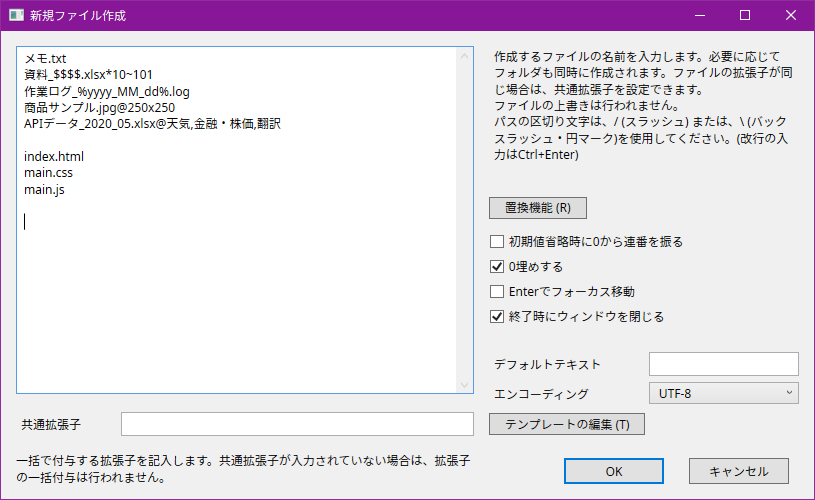

新規ファイル作成 v3.2
- Google Chrome 最新版
- Mozilla Firefox 最新版
- Microsoft Edge 最新版
- Opera 最新版
- Vivaldi 最新版
動作環境
.NET Framework 4.7.2が動作する環境で使用することができます。
Windows10最新版であればすでにより上位のバージョンがインストールされているはずなので、そのまま使うことができます。( Windows10 Home 64bit Ver 1909 で動作確認済み)
Windows7・Windows 8.1・Windows 10 Fall Creators Update (1709)以前を使用している場合、または何らかの理由でインストールされていなかった場合は、以下のリンクからインストーラを入手出来ます。
>> Windows 用の Microsoft .NET Framework 4.7.2 Web インストーラー
必要な画面サイズは、最小で1000ピクセルx700ピクセルです。
コマンド登録方法
注意
※ ローカルファイルへの書き込みが頻繁に行われるため、権限により失敗する可能性のあるフォルダには配置しないでください。
- 前作(v2以前)が存在する場合は、前作で使用した、makeNewFileフォルダと新規ファイル作成.txtはどちらも必要ないので、まとめて削除してください。
- 次に、配布zipファイル内のすべてのファイル、フォルダをお好きなフォルダに配置します。必ずすべてのファイル・フォルダを同じディレクトリに配置してください。
- 実行ファイルをAs/Rのスクリプトに登録します。前作と異なり、基本的なオプションはUIに移行したので、コマンドラインオプションをいじる必要はほぼ無いと思います。ですので今回は、ユーザー外部コマンドとして登録する方が簡単かと思いますので、そちらで説明します。(もちろん、スクリプトコマンドでもユーザー定義バーでも、全く問題はありません)
オプション>インターフェース>コマンド定義>ユーザー外部コマンドでスクリプトを登録します。
コマンドラインは、[makeNewFile_x64.exeまでのパス] ?NowDir?として登録してください。
- コマンドをお好きなキーに登録して、呼び出せれば完了です。 (例のごとく警告が出るかもしれませんが、いつものです。)
使用方法
以下、実際に使用している様子です。所々に含まれる記号にはそれぞれ機能が割り当てられています。
こちらは、共通拡張子を使用し、拡張子を省略した状態でファイル作成を行う様子です。
基本的な使い方
左側のテキストボックスに、作成するファイルのパス(相対パス)を入力します。フォルダも同時に作成可能です。 パスの区切り文字は、\または/を使用します。.から始まるファイル(.gitignore等)も問題なく作成できます。
例えば、東京\新宿\新宿駅.txtと入力すれば、現在開いているディレクトリから、東京フォルダが存在しない場合新規作成・東京\新宿フォルダが存在しない場合新規作成・東京\新宿\新宿駅.txtファイルが存在しない場合は、新規作成...のように処理されます。
ちなみに、東京\新宿\のように、パスの区切り文字を末尾に持ってくると、フォルダのみ作成します。ファイルと同時に空のフォルダを作成したい場合に使えます。
置換機能・テンプレート機能を用いることで、より柔軟かつ効率的なファイル作成が可能です。ただし、あくまで自分用ソフトなので、万人受けする実装では無い点はご了承ください。
キーボードショートカット
- Esc
ウィンドウを閉じます。 - F1
オンライン版ドキュメントを開きます。(内容はREADMEと同じです。) - Alt + R
「置換機能」ウィンドウを開きます。 - Alt + T
「テンプレートの編集」ウィンドウを開きます。
実行と設定の保存
実行は、OKボタンを押すか、各種入力欄でEnterキーを押します。(Shift+Enterで、設定を保存せず実行します。)
テキストボックスは複数行の入力が可能ですが、改行はCtrl+Enterで行います。
初回起動時に、レジストリにデフォルトの設定を書き込みます。終了時に、各種設定およびウィンドウサイズを保存します。
設定を保存しない場合は、実行時にShiftキーを押すことでウィンドウサイズ以外の各種設定の保存を一時的に無効化します。
置換機能
連番
連番機能は、入力されたパスが、正規表現^([^$*~]*\$+)+[^$*~]*\*[1-9]\d*(|~[1-9]\d*)$に一致する場合のみ自動的に連番を振る機能です。初めはEmmet記法を参考に、と考えていましたが、結局微妙に独自の文法になりました。orz
ちなみに、正規表現をビジュアル化するとこんな感じです。複数の連番を埋め込めるよう設計されています。
(https://regexper.com/で作成)
$は任意の数字1桁を表し、*の後に総数、さらにその後に~に続けて初期値を入力します。初期値を省略した場合は、通常1が初期値になりますが、オプションで0を初期値にすることも可能です。
連番記入例
| 記入例 | 作成されるファイル/フォルダ |
|---|---|
| project\資料$$$.txt*20 |
project\資料001.txt project\資料002.txt project\資料003.txt project\資料004.txt project\資料005.txt project\資料006.txt project\資料007.txt project\資料008.txt project\資料009.txt project\資料010.txt project\資料011.txt project\資料012.txt project\資料013.txt project\資料014.txt project\資料015.txt project\資料016.txt project\資料017.txt project\資料018.txt project\資料019.txt project\資料020.txt |
| 初期値込み$$$.log*20~101 |
初期値込み101.log 初期値込み102.log 初期値込み103.log 初期値込み104.log 初期値込み105.log 初期値込み106.log 初期値込み107.log 初期値込み108.log 初期値込み109.log 初期値込み110.log 初期値込み111.log 初期値込み112.log 初期値込み113.log 初期値込み114.log 初期値込み115.log 初期値込み116.log 初期値込み117.log 初期値込み118.log 初期値込み119.log 初期値込み120.log |
| project_$$\サンプル$$.ini*10 |
project_01\サンプル01.ini project_02\サンプル02.ini project_03\サンプル03.ini project_04\サンプル04.ini project_05\サンプル05.ini project_06\サンプル06.ini project_07\サンプル07.ini project_08\サンプル08.ini project_09\サンプル09.ini project_10\サンプル10.ini |
処理実行中はメイン画面が操作できないようになっていますが、処理自体はUIとは違うスレッドに投げているので、画面がフリーズするということはない(はず)です。処理落ちしているかどうかは、プログレスバーで判断してください。
日付・時刻
日付・時刻は、%で括った置換フォーマットを自動展開する機能です。複数の箇所に分けて挿入可能なので、柔軟に対応出来ます。置換フォーマットと見なされなければ展開されないだけなので、年や月といった文字を含める事ができます。ちなみに、実行開始時刻を付与する設計なので、重い処理のせいで途中で時間が変わる、といったことは起こりません。
日付・時刻展開例
| 記入例 | 展開例 |
|---|---|
| %yyyy_MM_dd% | 2020_04_18 |
| %hh時mm分ss秒% | 10時15分58秒 |
これらのフォーマットは、.NET Framework 4.7.2 DateTimeFormatInfo クラスに準拠しており、例として提示している以外の置換フォーマットも使えます。
詳しくはこちらをどうぞ。 >> DateTimeFormatInfo クラス
また、置換フォーマットの展開方法は、地域設定に基づいているため、環境により展開される内容が異なる場合があります。(曜日が「Wednesday」と置換されるか、「水曜日」と置換されるかは、OSの地域設定で決まります。)
以下に、連番機能と日付・時刻機能を合わせた記入例も示します。
| 記入例 | 作成されるファイル/フォルダ |
|---|---|
| project\log_%yyyy_MM_dd_hh_mm_ss%__$$.log*10 |
project\log_2020_04_18_10_20_57__01.log project\log_2020_04_18_10_20_57__02.log project\log_2020_04_18_10_20_57__03.log project\log_2020_04_18_10_20_57__04.log project\log_2020_04_18_10_20_57__05.log project\log_2020_04_18_10_20_57__06.log project\log_2020_04_18_10_20_57__07.log project\log_2020_04_18_10_20_57__08.log project\log_2020_04_18_10_20_57__09.log project\log_2020_04_18_10_20_57__10.log |
テンプレート置換
規定のテンプレート設定を上書きできます。 上書き可能な値は、画像サイズと、スプレッドシートのシート名です。
スプレッドシートのシート名を指定してxlsxファイルを出力する例を示します。
| 記入例 | 作成されるファイル |
|---|---|
| 株価メモ.xlsx@サービス,情報・通信,小売り,卸売り,その他 | 「サービス」,「情報・通信」,「小売り」,「卸売り」,「その他」の5つのシートを持つ、株価メモ.xlsx |
その他のオプション
初期値省略時に0から連番を振る
連番付与時に、初期値を省略した場合、1ではなく0から連番を付与します。
0埋めする
連番付与時に、余った桁を0で埋めます。
0埋めをする場合
| 記入例 | 作成されるファイル |
|---|---|
| sample_$$$.txt*5 |
sample_001.txt sample_002.txt sample_003.txt sample_004.txt sample_005.txt |
| sample2_$.txt*10 | エラー(桁の不足) |
0埋めをしない場合
| 記入例 | 作成されるファイル |
|---|---|
| sample_$$$.txt*5 |
sample_1.txt sample_2.txt sample_3.txt sample_4.txt sample_5.txt |
| sample2_$.txt*10 |
sample2_1.txt sample2_2.txt sample2_3.txt sample2_4.txt sample2_5.txt sample2_6.txt sample2_7.txt sample2_8.txt sample2_9.txt sample2_10.txt |
Enterでフォーカス移動
「Ctrl+Enterで改行・Enterで実行・Tabでフォーカス移動」を「Ctrl+Enterで改行・Enter / Tabでフォーカス移動」に変更します。
終了時にウィンドウを閉じる
実行終了と共にウィンドウを閉じるかどうかを設定します。
デフォルトテキスト
ファイルの新規作成と同時に、ファイルに書き込むテキストを設定します。テキストボックス内で改行することはできません。より細かく書き込み設定を変更したい場合は、後述のテンプレート機能を使用してください。また、デフォルトテキストが、テンプレートの設定を上書きすることはありません。
エンコーディング
デフォルトテキストのエンコーディングを設定します。デフォルトテキストが空文字の場合は、どれを選んでも変わりません。どっちにしろ0バイトなので。。。また、こちらもテンプレートの設定を上書きすることはありません。
テンプレート機能
テンプレート
ファイルを作成する際に、デフォルトで使用する書き出し設定を自由に決めることができます。
テンプレートには、「テキスト」および「画像」の2つの種類が存在します。テキストテンプレートの場合は、書き込むテキストとエンコーディング、画像テンプレートの場合は、サイズと背景色を設定することができます。
テキストテンプレ－トの対応拡張子に、画像フォーマットに登録されている拡張子を設定することはできません。また、画像テンプレートの対応拡張子に、テキストフォーマットに登録されている拡張子を設定することはできません。
対応する拡張子は、拡張子を列挙するか、*を用いて設定します。Bitmapを用いた場合、テキストテンプレートの場合は、画像フォーマット、およびOfficeフォーマットに登録されている以外のすべての拡張子が対象になり、画像テンプレートの場合は、画像フォーマットに登録されているすべての拡張子が対象になります。
テンプレートの名前が被っても特に問題はありません。あらかじめサンプルとしていくつかのテンプレートを用意しておくので、参考にしてください。
ちなみに、一部のテキストテンプレートのデータのみ、データサイズに起因するエラーを避ける目的で、ローカルのファイルに保存されています。
フォーマット
現在対応しているフォーマットは、画像形式が、Bitmap, GIF, JPEG, PNG, TIFF, WMP、スプレッドシート形式が、バイナリ形式 (BIFF), XML形式 (OOXML)です。
バイナリ形式は、xlsファイルとして、Excel2003まで利用されていた形式、XML形式は、xlsxファイルとして、Excel2007から採用された形式です。
また、スプレッドシート形式で書き出しを行う場合、使用するPCにExcelがインストールされている必要はありません。
対応フォーマットを自由に追加することはできませんが、フォーマットに対応する拡張子を追加することはできます。(需要があるかは知りません。)
コマンドラインオプション
コマンドラインオプションは、一度設定すれば変更する必要の無い設定、通常使用しない機能を設定する目的で用意されています。
コマンドラインオプションのは、makeNewFile.exe ?NowDir? --showDetailsOfErrors=false --alertManyItems=1000のようにして使用します。
ほぼ必要ない代わりに、不必要なスペースやダブルクォーテーション、大文字・小文字の差異など、1箇所でも間違えると反映されない、全く融通の利かないオプションなので、使用する際はコピペ推奨です。
--showDetailsOfErrors
設定可能な値 : true, false
初期値 : false
エラーが発生した場合、エラーの詳細を表示します。エラーが多く出るとスクリーンからはみ出すことと、単に邪魔なので、エラーの原因究明以外の目的で使用するメリットはありません。
--alertManyItems
設定可能な値 : 任意の整数値
初期値 : 1000
デフォルトでは、連番作成時に1000以上のアイテムを作成する場合に、一度警告を出します。主な目的は数字の打ち間違えの防止です。このオプションを用いて、エラーを出すアイテム数を設定できます。0を指定して起動すると、アラートを出さなくなります。
--fontSize
設定可能な値 : 任意の整数値
初期値 : 12
スクリーンサイズの問題で、文字が見づらい場合に、フォントサイズを変更することができます。想定しているフォントサイズは、10～14px程度です。大きすぎたり、小さすぎたりする場合は、レイアウトが崩れます。
--disableCheckForUpdate
設定可能な値 : true, false
初期値 : false
通常、約1週間に一度アップデート確認を行いますが、インターネット接続を断った環境では常に確認に失敗するため、10回起動する毎にエラーが表示されます。そのような環境では、アップデート自動確認機能を切ることができます。主に、オフライン環境において、不必要なエラーを回避する目的で用意したオプションです。
アップデート通知
アップデートはおよそ1週間に一度、起動時に自動的に確認を行います。最新版がリリースされている場合、またはアップデートの確認に10回以上連続で失敗した場合には、アップデートを促す通知が表示されます。また、アップデートはその都度回避可能です。--disableCheckForUpdate=trueを指定して起動することで、常に回避することも可能です。
ソフトウェアの削除
ソフトウェアを削除する場合は、zipファイルに含まれていた全てのファイルとフォルダを削除してください。
レジストリの方はミスするとダメなので、やり方を詳しく説明するのは止めときますが、HKEY_CURRENT_USER\Software\ASR_UserTools\makeNewFileが関連するレジストリキーです。どうしてもレジストリごと削除したいという方は、自己責任でお願いします。
ライセンス
MITライセンスですので、コピー・配布・変更・商用利用すべてOKです。ただし、保証は一切ついていません。
ウイルス対策ソフトについて
動作確認中に複数回ウイルス対策ソフトに検知されたので、一応書いておくことにしました。
このソフトウェアはオープンソースとして、ビルドに必要なコードはすべて公開していますので、git cloneして、Visual Studioでビルドすれば使えます。(良く分からなければ無視してください。)
また、配布しているexeに関しては、ハッシュ値を公開しているので、ダウンロードしたファイルとの同一性を確認することも可能です。(ただし、git cloneして、Visual Studioでビルドして作成した場合のexeと、公開しているexeのバイナリは一致しません。これは、コード内にあるGitHub APIの認証キーを偽の文字列にした状態でコードを公開しているためです。ぶっちゃけ、ばれたからといって大して困りませんが。。。ちなみに、認証キーが正しくない場合は、アップデートの確認ができなくなるだけで、他の機能は普通に使えます。)
その他
その他要望等がある際は、GitHubでissueを立てていただければ、できる限りの対応はさせて頂きます。
また、このソフトは、As/Rと連動して使用する前提で設計されていますが、As/Rからは独立したソフトウェアであり、発生したエラー・不具合およびあらゆるアンチウイルスソフトウェアによる検出に関しては、無関係ですので、不具合報告等は適切なところへお願いします。
雑記
前作までの、JavaScript+HTML/CSSベースのElectronをやめて、C#ベースのWPFに移行しました。WPFには未来はないとか、UWPも思ったほどじゃないとか、じゃあ見た目は古いけどWindows Formsかだとか、散々言ってる人もいましたが、どれもそれなりの良さがあるという感じらしいので、まあどれでもいいか、と。まあ、いまだに7とかxpとか現役で動いてるような世界ですから、10で動くものはしばらく見捨てられることは無いでしょう。そんな感じで、WPFを選びました。速度的には若干見劣りするところもあるらしいですが、個人的には満足です。
あとソフトの名前が適当すぎるのは、そもそもこのソフトが、数年前に超適当に作ったバッチファイルから派生したもので、それが次第にGUIツール化したという経緯からです。
Author
NumLocker (https://github.com/NumLocker-Japan)
Credits
This software was made possible the following open source project.
Version 2.0, January 2004
http://www.apache.org/licenses/
TERMS AND CONDITIONS FOR USE, REPRODUCTION, AND DISTRIBUTION
1. Definitions.
"License" shall mean the terms and conditions for use, reproduction,
and distribution as defined by Sections 1 through 9 of this document.
"Licensor" shall mean the copyright owner or entity authorized by
the copyright owner that is granting the License.
"Legal Entity" shall mean the union of the acting entity and all
other entities that control, are controlled by, or are under common
control with that entity. For the purposes of this definition,
"control" means (i) the power, direct or indirect, to cause the
direction or management of such entity, whether by contract or
otherwise, or (ii) ownership of fifty percent (50%) or more of the
outstanding shares, or (iii) beneficial ownership of such entity.
"You" (or "Your") shall mean an individual or Legal Entity
exercising permissions granted by this License.
"Source" form shall mean the preferred form for making modifications,
including but not limited to software source code, documentation
source, and configuration files.
"Object" form shall mean any form resulting from mechanical
transformation or translation of a Source form, including but
not limited to compiled object code, generated documentation,
and conversions to other media types.
"Work" shall mean the work of authorship, whether in Source or
Object form, made available under the License, as indicated by a
copyright notice that is included in or attached to the work
(an example is provided in the Appendix below).
"Derivative Works" shall mean any work, whether in Source or Object
form, that is based on (or derived from) the Work and for which the
editorial revisions, annotations, elaborations, or other modifications
represent, as a whole, an original work of authorship. For the purposes
of this License, Derivative Works shall not include works that remain
separable from, or merely link (or bind by name) to the interfaces of,
the Work and Derivative Works thereof.
"Contribution" shall mean any work of authorship, including
the original version of the Work and any modifications or additions
to that Work or Derivative Works thereof, that is intentionally
submitted to Licensor for inclusion in the Work by the copyright owner
or by an individual or Legal Entity authorized to submit on behalf of
the copyright owner. For the purposes of this definition, "submitted"
means any form of electronic, verbal, or written communication sent
to the Licensor or its representatives, including but not limited to
communication on electronic mailing lists, source code control systems,
and issue tracking systems that are managed by, or on behalf of, the
Licensor for the purpose of discussing and improving the Work, but
excluding communication that is conspicuously marked or otherwise
designated in writing by the copyright owner as "Not a Contribution."
"Contributor" shall mean Licensor and any individual or Legal Entity
on behalf of whom a Contribution has been received by Licensor and
subsequently incorporated within the Work.
2. Grant of Copyright License. Subject to the terms and conditions of
this License, each Contributor hereby grants to You a perpetual,
worldwide, non-exclusive, no-charge, royalty-free, irrevocable
copyright license to reproduce, prepare Derivative Works of,
publicly display, publicly perform, sublicense, and distribute the
Work and such Derivative Works in Source or Object form.
3. Grant of Patent License. Subject to the terms and conditions of
this License, each Contributor hereby grants to You a perpetual,
worldwide, non-exclusive, no-charge, royalty-free, irrevocable
(except as stated in this section) patent license to make, have made,
use, offer to sell, sell, import, and otherwise transfer the Work,
where such license applies only to those patent claims licensable
by such Contributor that are necessarily infringed by their
Contribution(s) alone or by combination of their Contribution(s)
with the Work to which such Contribution(s) was submitted. If You
institute patent litigation against any entity (including a
cross-claim or counterclaim in a lawsuit) alleging that the Work
or a Contribution incorporated within the Work constitutes direct
or contributory patent infringement, then any patent licenses
granted to You under this License for that Work shall terminate
as of the date such litigation is filed.
4. Redistribution. You may reproduce and distribute copies of the
Work or Derivative Works thereof in any medium, with or without
modifications, and in Source or Object form, provided that You
meet the following conditions:
(a) You must give any other recipients of the Work or
Derivative Works a copy of this License; and
(b) You must cause any modified files to carry prominent notices
stating that You changed the files; and
(c) You must retain, in the Source form of any Derivative Works
that You distribute, all copyright, patent, trademark, and
attribution notices from the Source form of the Work,
excluding those notices that do not pertain to any part of
the Derivative Works; and
(d) If the Work includes a "NOTICE" text file as part of its
distribution, then any Derivative Works that You distribute must
include a readable copy of the attribution notices contained
within such NOTICE file, excluding those notices that do not
pertain to any part of the Derivative Works, in at least one
of the following places: within a NOTICE text file distributed
as part of the Derivative Works; within the Source form or
documentation, if provided along with the Derivative Works; or,
within a display generated by the Derivative Works, if and
wherever such third-party notices normally appear. The contents
of the NOTICE file are for informational purposes only and
do not modify the License. You may add Your own attribution
notices within Derivative Works that You distribute, alongside
or as an addendum to the NOTICE text from the Work, provided
that such additional attribution notices cannot be construed
as modifying the License.
You may add Your own copyright statement to Your modifications and
may provide additional or different license terms and conditions
for use, reproduction, or distribution of Your modifications, or
for any such Derivative Works as a whole, provided Your use,
reproduction, and distribution of the Work otherwise complies with
the conditions stated in this License.
5. Submission of Contributions. Unless You explicitly state otherwise,
any Contribution intentionally submitted for inclusion in the Work
by You to the Licensor shall be under the terms and conditions of
this License, without any additional terms or conditions.
Notwithstanding the above, nothing herein shall supersede or modify
the terms of any separate license agreement you may have executed
with Licensor regarding such Contributions.
6. Trademarks. This License does not grant permission to use the trade
names, trademarks, service marks, or product names of the Licensor,
except as required for reasonable and customary use in describing the
origin of the Work and reproducing the content of the NOTICE file.
7. Disclaimer of Warranty. Unless required by applicable law or
agreed to in writing, Licensor provides the Work (and each
Contributor provides its Contributions) on an "AS IS" BASIS,
WITHOUT WARRANTIES OR CONDITIONS OF ANY KIND, either express or
implied, including, without limitation, any warranties or conditions
of TITLE, NON-INFRINGEMENT, MERCHANTABILITY, or FITNESS FOR A
PARTICULAR PURPOSE. You are solely responsible for determining the
appropriateness of using or redistributing the Work and assume any
risks associated with Your exercise of permissions under this License.
8. Limitation of Liability. In no event and under no legal theory,
whether in tort (including negligence), contract, or otherwise,
unless required by applicable law (such as deliberate and grossly
negligent acts) or agreed to in writing, shall any Contributor be
liable to You for damages, including any direct, indirect, special,
incidental, or consequential damages of any character arising as a
result of this License or out of the use or inability to use the
Work (including but not limited to damages for loss of goodwill,
work stoppage, computer failure or malfunction, or any and all
other commercial damages or losses), even if such Contributor
has been advised of the possibility of such damages.
9. Accepting Warranty or Additional Liability. While redistributing
the Work or Derivative Works thereof, You may choose to offer,
and charge a fee for, acceptance of support, warranty, indemnity,
or other liability obligations and/or rights consistent with this
License. However, in accepting such obligations, You may act only
on Your own behalf and on Your sole responsibility, not on behalf
of any other Contributor, and only if You agree to indemnify,
defend, and hold each Contributor harmless for any liability
incurred by, or claims asserted against, such Contributor by reason
of your accepting any such warranty or additional liability.
END OF TERMS AND CONDITIONS
License
Copyright (c) 2020 NumLocker
Released under the MIT license
to any person obtaining a copy of this software and associated documentation files (the "Software"),
to deal in the Software without restriction, including without limitation the rights
to use, copy, modify, merge, publish, distribute, sublicense, and/or sell copies of the Software,
and to permit persons to whom the Software is furnished to do so, subject to the following conditions:
The above copyright notice and this permission notice shall be included in all copies or substantial portions of the Software.
THE SOFTWARE IS PROVIDED "AS IS", WITHOUT WARRANTY OF ANY KIND, EXPRESS OR IMPLIED,
INCLUDING BUT NOT LIMITED TO THE WARRANTIES OF MERCHANTABILITY,
FITNESS FOR A PARTICULAR PURPOSE AND NONINFRINGEMENT.
IN NO EVENT SHALL THE AUTHORS OR COPYRIGHT HOLDERS BE LIABLE FOR ANY CLAIM, DAMAGES OR OTHER LIABILITY,
WHETHER IN AN ACTION OF CONTRACT, TORT OR OTHERWISE, ARISING FROM,
OUT OF OR IN CONNECTION WITH THE SOFTWARE OR THE USE OR OTHER DEALINGS IN THE SOFTWARE.